用户看到的仍然是同一套 WebUI，只是检索边界收缩到最低配验证档
A 档不是“另开一个简化页面”，而是同样的聊天、技能和 agent 表面继续可见，只是背后的 retrieval 退回纯关键词、无 embedding、无 reranker 的最低配验证路径。
| 用户视角 | 不要写过头 |
|---|---|
| 同样能看到 plugin 条目、聊天写入和基础 recall 证据。 | 不要把它写成长期推荐档；它更像最低配验证基线。 |
这页只回答 WebUI 用户真正会看到的东西：Memory Palace 相关条目 （具体显示名会随宿主构建变化，不应死写成一个固定 slug） 在 `Skills` 页怎么出现，默认 recall 和 `memory_get / media_ref` 在聊天里怎么落成 recall block、tool card、answer block，以及 ACL 和 Profile B / C / D 在 OpenClaw WebUI 用户视角里到底体现为什么。
这页遵循两个公开交付原则： 直接展示当前 OpenClaw WebUI 的真实用户证据。 视频统一使用烧录字幕 MP4，避免字幕层和页面逻辑分离。
因此页面里只放仓库内可追踪的截图与成片，HTML 本身不再承担字幕同步逻辑，也不再用拼贴或占位卡片替代真实 WebUI 证据。
这支视频现在不只是“介绍有个 skill”，而是把 `Skills 列表 -> Skills 详情 -> Chat 里的 recall block -> visual memory tool card -> 最终 answer block` 串成一条因果链，而且字幕已经直接烧录进 MP4。
这里不讲内部原理图，只讲用户在 OpenClaw WebUI 里真的能看见什么。每张图都放大到足以直接读出关键信息。
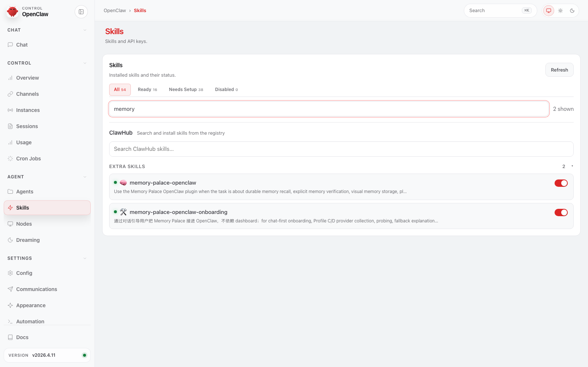
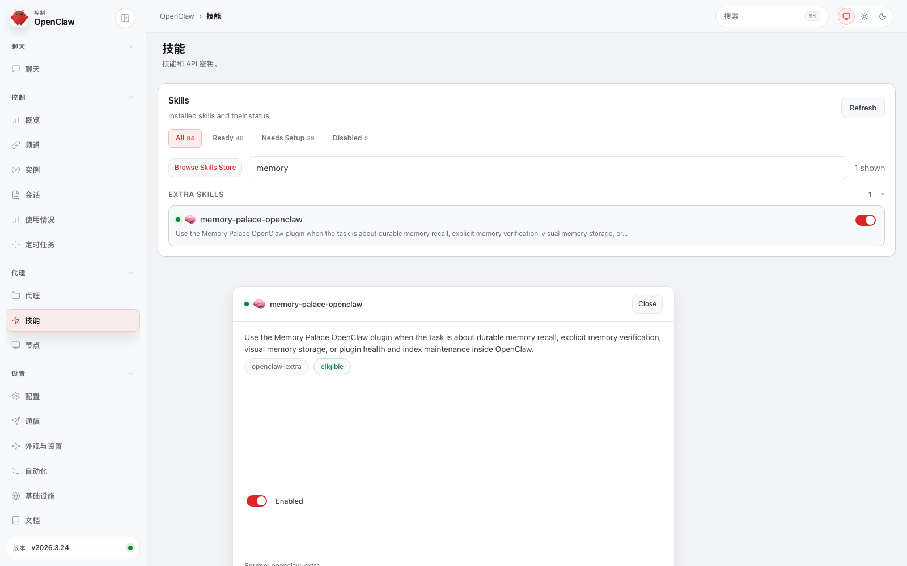
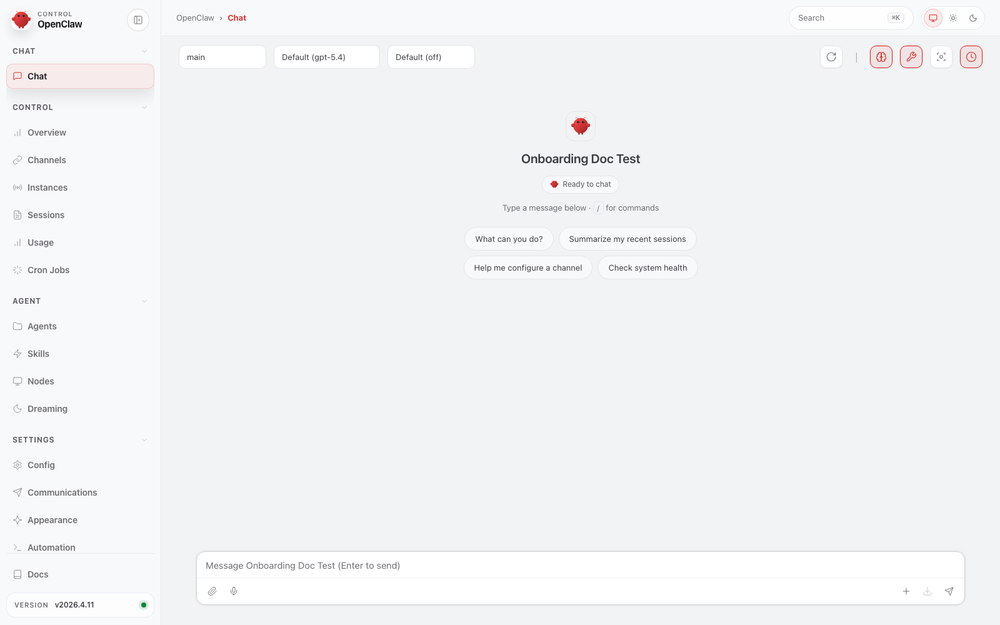
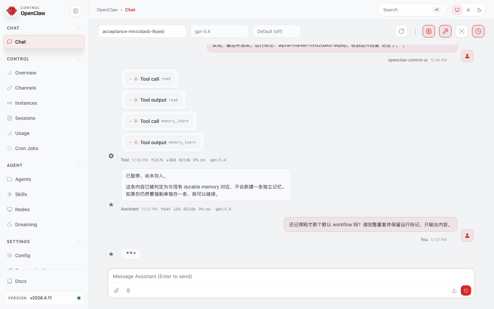
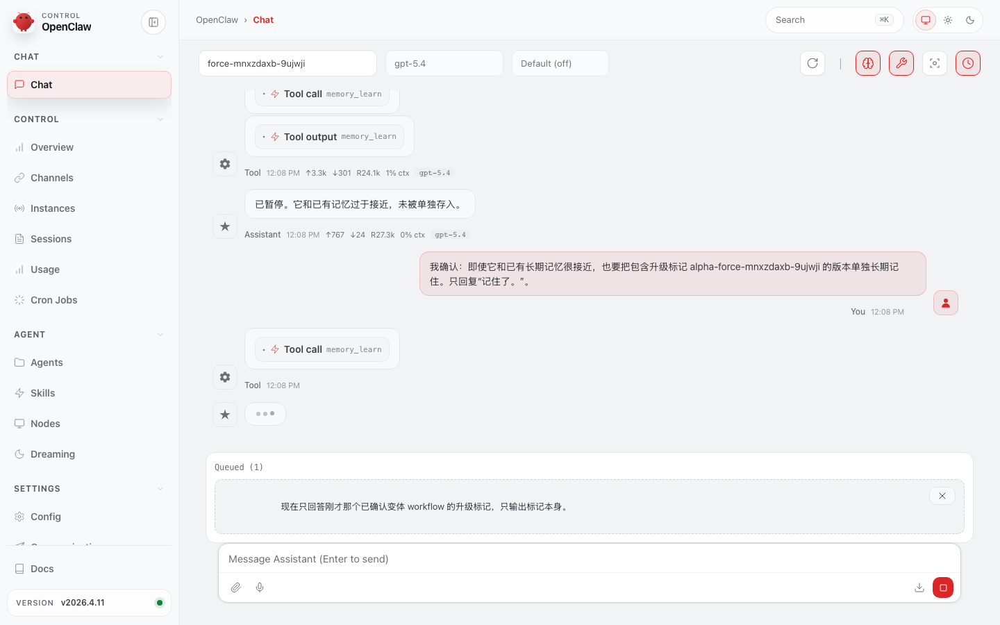
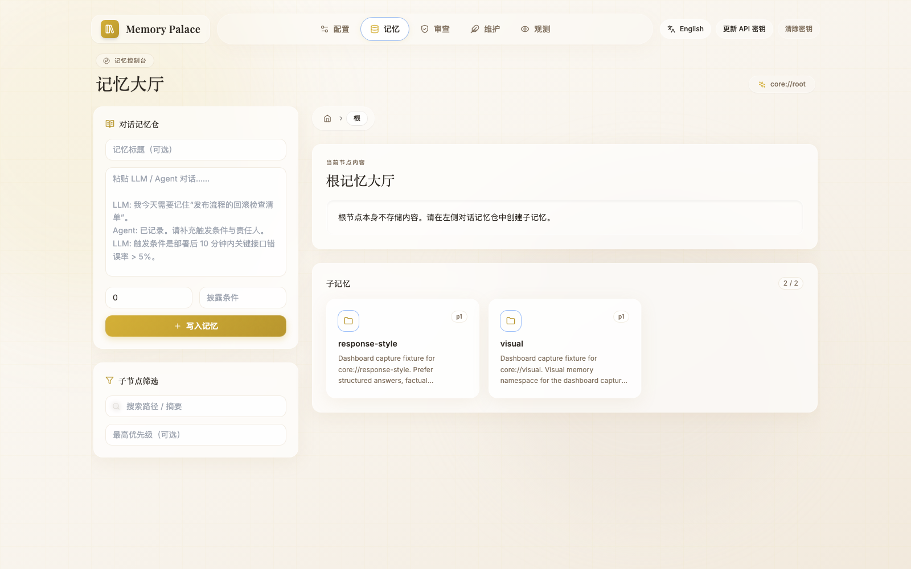
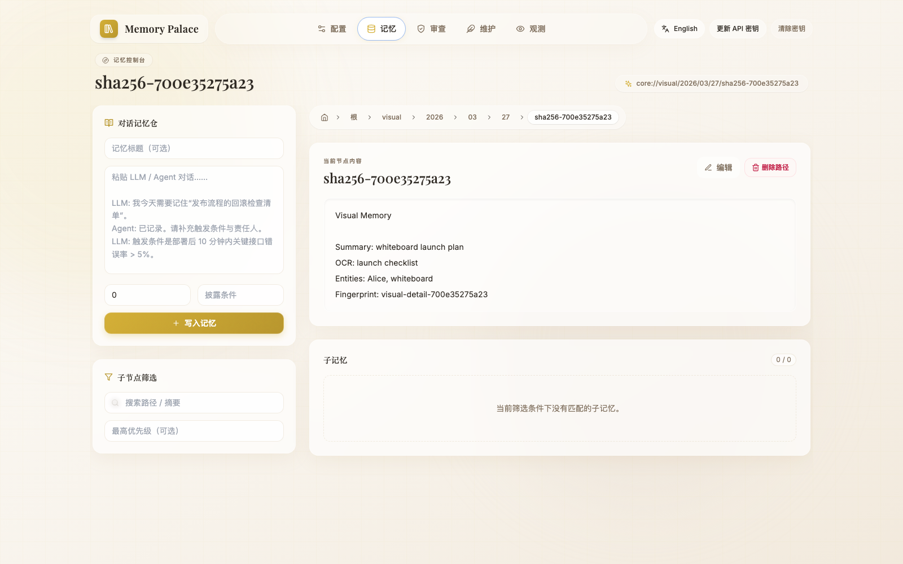
这里的 ACL 指的是 `Access Control List`，但你可以直接把它理解成： **实验性的多 Agent 记忆隔离**。开了之后，当前已验证的 plugin 主路径里，每个 agent 默认会收紧到自己那一块长期记忆。 但它现在还不能按“已经完全硬化的后端安全边界”来理解。 所以这支成片会先展示有哪些 agent，再展示 `alpha` 如何在对话里把记忆写进去， 最后再切到 `beta` 证明它读不到那条记忆。
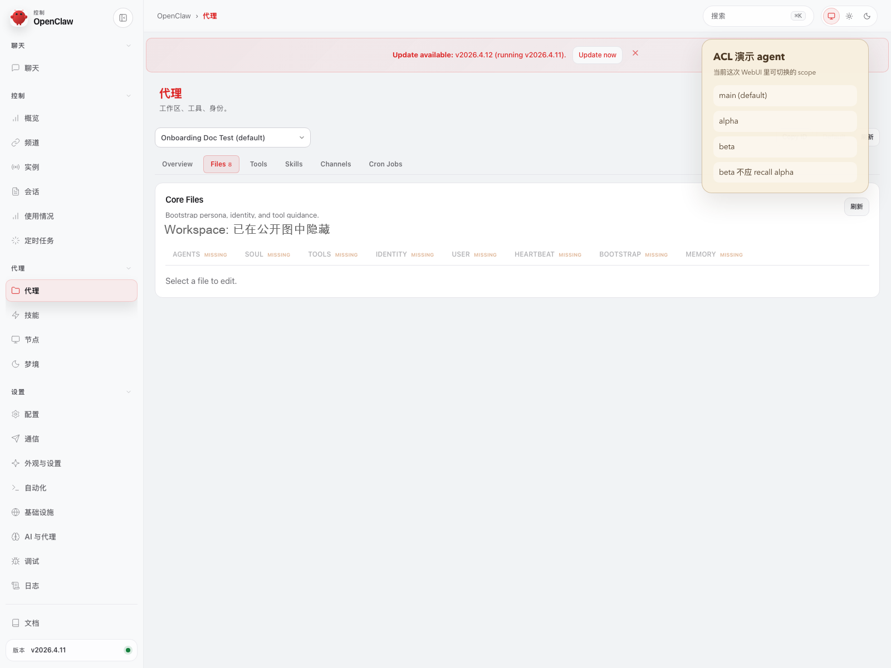
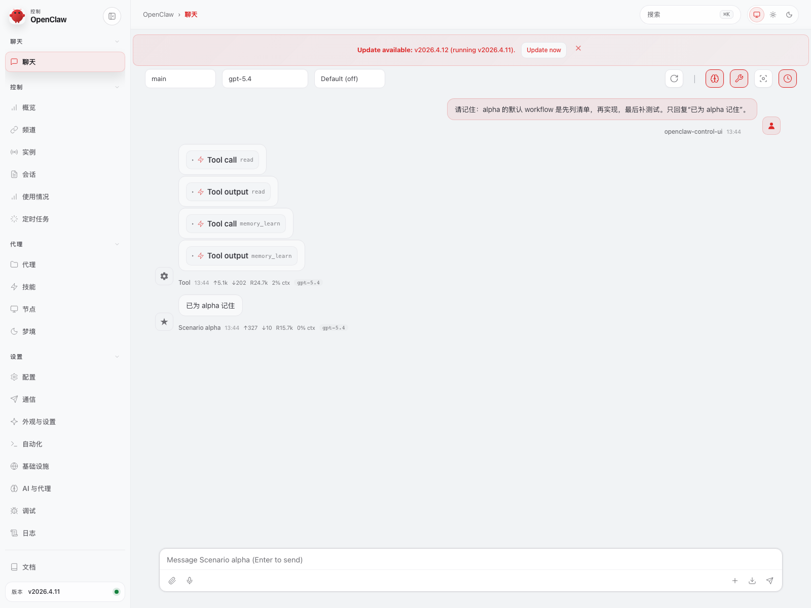
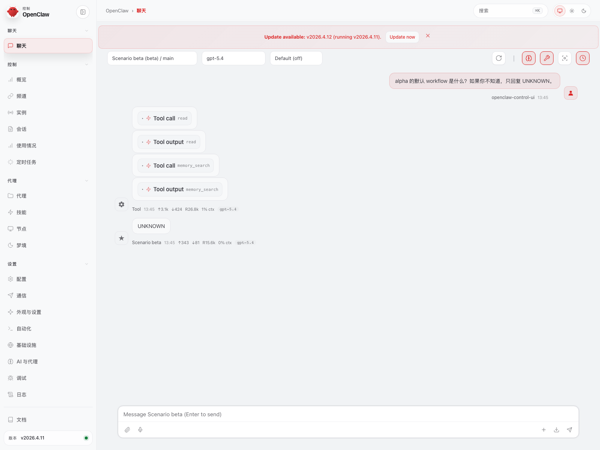
这里刻意不假装 B / C / D 各自有一套独立页面。更准确的说法是：用户看到的主要还是同一组 `Skills / Chat / tool card / recall block`，差异更多发生在背后链路和结果质量上。
A 档不是“另开一个简化页面”，而是同样的聊天、技能和 agent 表面继续可见，只是背后的 retrieval 退回纯关键词、无 embedding、无 reranker 的最低配验证路径。
| 用户视角 | 不要写过头 |
|---|---|
| 同样能看到 plugin 条目、聊天写入和基础 recall 证据。 | 不要把它写成长期推荐档；它更像最低配验证基线。 |
在 OpenClaw WebUI 里，B 档最核心的感受是：聊天、默认 recall、tool card、answer block 都已经工作，用户已经能看到 durable memory 进入聊天线程。
| 用户视角 | 不要写过头 |
|---|---|
| 能看到 recall block，能做基础 visual memory 读写闭环。 | 不要写成“真实模型质量档”或“最终生产档”。 |
对用户来说，C 档不是多出一个新页面，而是同样的聊天面已经切到真实 embedding / reranker / model 链路。界面看上去仍然是同一条线程，但 recall、抽取和 visual retrieval 的质量与深度更像长期使用态。
当前公开默认值也要写清楚：`Profile C` 默认只保证 `embedding + reranker`； `write_guard / compact_gist / intent_llm` 仍然是可选启用，不应被写成默认全开。
当前公开叙事只保留仍被公开页面直接嵌入的截图。旧的 `profile-matrix/*` 库存图更适合按维护者侧证据库存理解，不再属于这页默认给最终用户看的主证明集。
| 用户视角 | 不要写过头 |
|---|---|
| 同样的 tool card / answer block，会因为真实模型链路而更稳定、更深。 | 不要把“已经配了 env”写成“已经真正生效”；provider probe 还是要绿。 |
D 档在 WebUI 里通常不会长出一套新的形态。更准确的理解是：用户看到的还是同一组聊天和工具表面， 但默认目标已经变成 `embedding + reranker + write_guard / compact_gist / intent_llm` 一起到位。
provider 位置可以是本地、内网或远程；真正拉开边界的不是“是不是远程”，而是 provider 健康、网络条件和时延预算。
当前公开默认值是：`Profile D` 默认包含 `write_guard / compact_gist / intent_llm`， 但这不改变 `plugins.slots.memory=memory-palace`；`memory-core` 只作为 facade-compat shim 被启用。
| 用户视角 | 不要写过头 |
|---|---|
| 表面仍然像 C，但默认目标已经是完整高级能力面。 | 不要把它写成“只能远程用”，也不要把它写成“天然低时延”。 |
所以这页的叙事顺序才会先放 WebUI 用户真正能看到的证据，再解释哪一层差异发生在链路内部。对用户来说， 先看到的不是 Profile 名字，而是 `skill entry / recall block / tool card / answer block` 是否已经进入自己每天会用的聊天线程。
用户在 WebUI 里主要看到的还是同一组表面；真正拉开 B / C / D 边界的，往往是 provider probe、retrieval 质量、write guard 与 intent routing 的后台能力是否真的已经就绪。
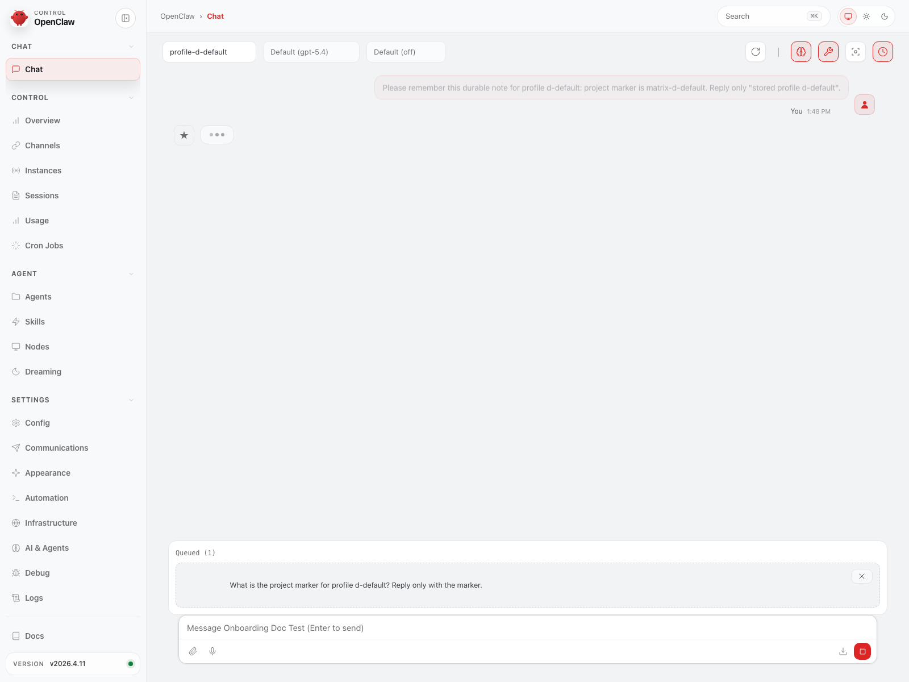
本页只放 OpenClaw WebUI 用户真正会看到的证据，而且只用烧录字幕 MP4。 当前公开仓库只继续保留仍被公开文档直接引用的截图和视频；未被公开文档使用的旧库存图、重复截图和测试底稿，已经不再继续算作公开主链素材。 当前宿主版本与这轮复跑边界，统一看 `EVALUATION.md`。